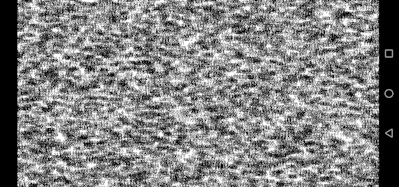
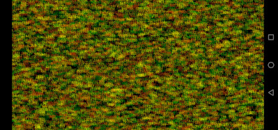

Random Number Screen RND1n: Screensaver for Android platforms, which generates random number sequences (c.f. Schrausser, 1996, p. 1-8 ff., 2022b, p. 4 ff., res.) and displays them in a random order on the screen. Both, the system's own and the SIGMA quasi-random function $n$ are used, where
$$n_i=a⋅r_{n_{i-1}^\varsigma}-int(a⋅r_{n_{i-1}^\varsigma}),$$
with restvalue $r_x$, $a=10^3$, $\varsigma=\frac{34}{45}$.
See sigma.inc, Schrausser (2022a, p. 17).


Schrausser, D. G. (1996). Permutationstests: Theoretische und praktische Arbeitsweise von Permutationsverfahren beim unverbundenen 2 Stichprobenproblem. Diplom. Institut für Psychologie, Karl Franzens Universität, Graz. http://doi.org/10.13140/RG.2.2.24500.32640/1
———. (2022a). Mathematical-Statistical Algorithm Interpreter, SCHRAUSSER-MAT: Function Index, Manual. Handbooks. Academia. https://doi.org/10.13140/RG.2.2.28314.52164
———. (2022b). Thesis chapter 1: Introduction. In: Permutation tests:.... Thesis. Karl Franzens University, Institute of Psychology. Academia. https://www.academia.edu/82224369